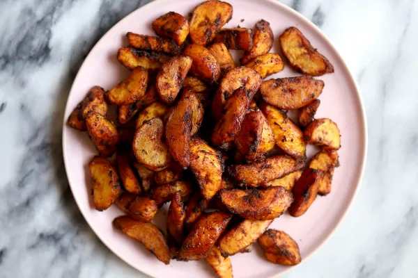
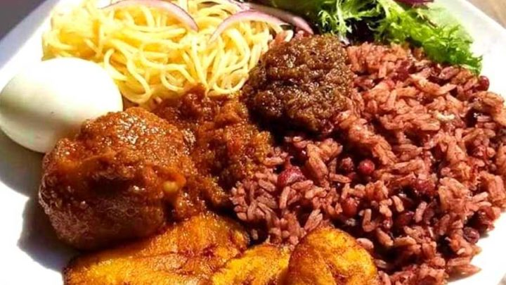

Meals in Ghana
-
Jollof Rice: A popular West African dish made with rice, tomatoes, onions, and a variety of spices, often served with chicken, beef, or fish.

-
Fufu: A starchy side dish made from cassava, yam, or plantain, pounded into a dough-like consistency and typically eaten with soups or stews like light soup, palm nut soup, or groundnut (peanut) soup.

- Kelewele: Spicy fried plantains, seasoned with a mixture of ginger, cayenne pepper, and other spices, usually served as a snack or side dish. 
-
Banku and Tilapia: Banku is a fermented corn and cassava dough, served with grilled tilapia fish, often accompanied by spicy pepper sauce or shito (a Ghanaian hot black pepper sauce).

-
Waakye: A nutritious dish made from rice and beans cooked together, often served with a variety of sides such as fried plantain, boiled eggs,fish,or meat.
 -
Beans and Gari: A simple yet delicious dish made from cooked beans, often black-eyed beans, mixed with gari (grated and dried cassava) and palm oil served with fried ripe plantain.